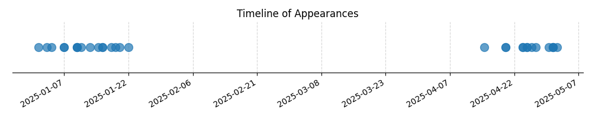

Kategorie: Principy letu
Vztlak je generován na základě Bernoulliho principu, který říká, že proudící tekutina (v tomto případě vzduch) má při vyšší rychlosti nižší tlak. Křidélko letadla má speciální profil (křidélko), který způsobuje, že vzduch proudící nad horní stranou profilu musí urazit delší dráhu než vzduch proudící pod spodní stranou v daném čase. To vede k vyšší rychlosti vzduchu nad profilem a tím k nižšímu tlaku nad ním. Naopak pod profilem je rychlost vzduchu nižší, což znamená vyšší tlak. Tento rozdíl tlaků vytváří sílu směřující vzhůru, tedy vztlak.

| Datum výskytu |
|---|
| 2025-05-02 |
| 2025-05-01 |
| 2025-05-01 |
| 2025-05-01 |
| 2025-04-30 |
| 2025-04-27 |
| 2025-04-26 |
| 2025-04-25 |
| 2025-04-25 |
| 2025-04-24 |
| 2025-04-24 |
| 2025-04-20 |
| 2025-04-20 |
| 2025-04-15 |
| 2025-01-22 |
| 2025-01-20 |
| 2025-01-19 |
| 2025-01-18 |
| 2025-01-16 |
| 2025-01-16 |
| 2025-01-15 |
| 2025-01-13 |
| 2025-01-11 |
| 2025-01-10 |
| 2025-01-10 |
| 2025-01-10 |
| 2025-01-07 |
| 2025-01-07 |
| 2025-01-04 |
| 2025-01-03 |
| 2025-01-01 |